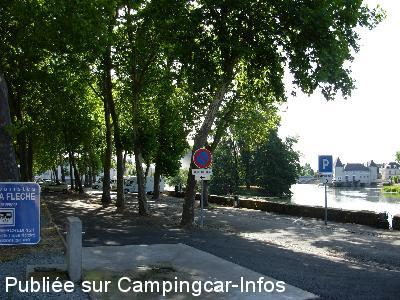
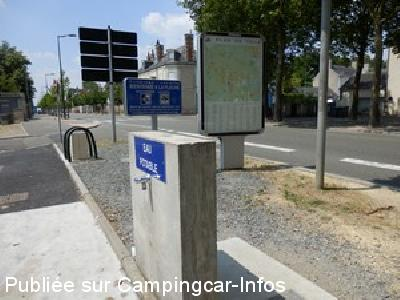
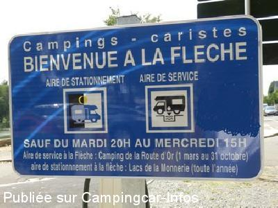
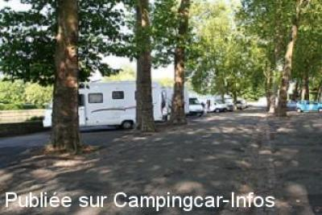
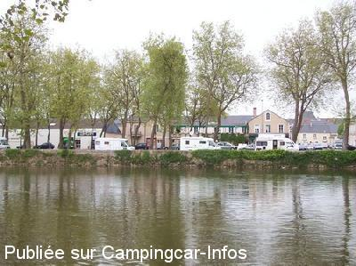
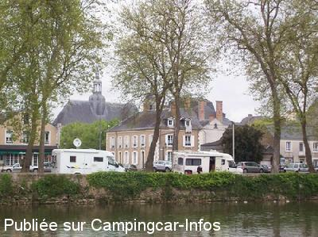

ASN = Aire de services avec stationnement nuit possible de :
LA FLÈCHE
(N° 807)
Accès/adresse :
Promenade du Maréchal Foch, D323
72200 LA FLÈCHE
72200 LA FLÈCHE
Latitude : (Nord) 47.69777° Décimaux ou 47° 41′ 51′′
Longitude : (Ouest) -0.07886° Décimaux ou 0° 4′ 43′′
Tarif : Gratuit
Type de borne : Plateforme
Services :


Tous Commerces
Autres informations :
Stationnement interdit du mardi 20 h au mercredi 15 h
http://www.ville-lafleche.fr

Le 19/08/2015 par Christian37_59

Le 25/07/2013 par Voyageur 65

Le 25/07/2013 par Voyageur 65

Le 20/09/2009 par CC80

Le 30/04/2009 par Promenade du Maréchal Foch

Le 30/04/2009 par Promenade du Maréchal Foch
de
Christian37_59
le 31/07/2015 :
Nous étions 9 camping-cars, cet 30 juillet, à passer la nuit sur cette aire. En effet le bruit de la circulation est présente avec une pause entre 22h00 et 4h00 du matin ou les premiers camions commencent à repasser.
Pour es camping-cars de plus de 7 m les places sont limites. Le marquage au sol est très bien fait permettant un espace de "vie" entre chaque camping-car.
Merci à la commune.
Nous étions 9 camping-cars, cet 30 juillet, à passer la nuit sur cette aire. En effet le bruit de la circulation est présente avec une pause entre 22h00 et 4h00 du matin ou les premiers camions commencent à repasser.
Pour es camping-cars de plus de 7 m les places sont limites. Le marquage au sol est très bien fait permettant un espace de "vie" entre chaque camping-car.
Merci à la commune.
de
maryline Lucas
le 13/11/2012 :
Nous avons profité de cette aire pour visiter cette charmante petite ville.
Elle est bien placée pour la visite mais certainement trop bruyante la nuit à cause de la circulation.
La borne était HS (en travaux)
Merci à la commune d'accueillir les cc
Nous avons profité de cette aire pour visiter cette charmante petite ville.
Elle est bien placée pour la visite mais certainement trop bruyante la nuit à cause de la circulation.
La borne était HS (en travaux)
Merci à la commune d'accueillir les cc
de
ylofon
le 22/04/2012 :
Sympa pour visiter cette belle cité , pas de parking le mercredi à cause du marché.Pour la nuit , trop bruyant , préférer Bazouges sur loir à 8 kms
Sympa pour visiter cette belle cité , pas de parking le mercredi à cause du marché.Pour la nuit , trop bruyant , préférer Bazouges sur loir à 8 kms
de
JMC
le 30/04/2009 :
Attention! marché le mercredi.
Le mardi soir, il est préférable d'aller dormir:
- En face, parking à l'extérieur du camping
N47,69574 W-0,07745
- Au parc de la Monnerie, route du Mans
N47,69879 W-0,05270
- Au Camping de la Route d'Or
N47,69504 W-0,07955
Attention! marché le mercredi.
Le mardi soir, il est préférable d'aller dormir:
- En face, parking à l'extérieur du camping
N47,69574 W-0,07745
- Au parc de la Monnerie, route du Mans
N47,69879 W-0,05270
- Au Camping de la Route d'Or
N47,69504 W-0,07955
de
mataf59
le 19/04/2009 :
Effectivement tout est gratuit au bord du Loir, mais comme dit prédédemment, il faut avoir le sommeil profond. Pour ceux que cela intérresse, le Camping Municipal de l'autre côté du Loir, nous accueille pour 9€ sans élect.emplacements spacieux, tout est propre, le gérant sympa. indiquera les emplacements les plus stabilisés pour les C.C de gros gabarits
Effectivement tout est gratuit au bord du Loir, mais comme dit prédédemment, il faut avoir le sommeil profond. Pour ceux que cela intérresse, le Camping Municipal de l'autre côté du Loir, nous accueille pour 9€ sans élect.emplacements spacieux, tout est propre, le gérant sympa. indiquera les emplacements les plus stabilisés pour les C.C de gros gabarits
de
Mataf59
le 06/10/2008 :
De passage en Septembre, stationnement agréable en journée pour visiter la ville et pour faire les services. Tout est gratuit. Mais il faut avoir le sommeil profond car l'aire est située en bord de route
Néanmoins, un merci à la commune d'avoir pensé aux C.Caristes
De passage en Septembre, stationnement agréable en journée pour visiter la ville et pour faire les services. Tout est gratuit. Mais il faut avoir le sommeil profond car l'aire est située en bord de route
Néanmoins, un merci à la commune d'avoir pensé aux C.Caristes
de
Orsa minore
le 28/09/2007 :
Meme commentaire que précédemment. Les WC étaient fermés.
Meme commentaire que précédemment. Les WC étaient fermés.
de
Esther
le 19/03/2007 :
Traduction du commentaire rédigé en anglais le 18/03/2007 par Robbie :
Le centre ville au bord du Loir très commode, mais aussi très bruyant la nuit, très bon pour la visite de la ville qui est très belle.
Traduction du commentaire rédigé en anglais le 18/03/2007 par Robbie :
Le centre ville au bord du Loir très commode, mais aussi très bruyant la nuit, très bon pour la visite de la ville qui est très belle.
de
robbie
le 18/03/2007 :
centre town next to loir very convenient ,but also very noisy at night ,very good for viewing town wich is very nice
centre town next to loir very convenient ,but also very noisy at night ,very good for viewing town wich is very nice
de
Michel Neveu
le 07/01/2007 :
Endroit ombragé très agréable situé sur le bord du Loir avec en face un magnifique chateau faisant office de mairie, emplacement pouvant accueillir une quinzaine de camping-cars. A proximité, 1OO M environ, un supermarché ouvert toute la semaine et le dimanche matin.
Endroit ombragé très agréable situé sur le bord du Loir avec en face un magnifique chateau faisant office de mairie, emplacement pouvant accueillir une quinzaine de camping-cars. A proximité, 1OO M environ, un supermarché ouvert toute la semaine et le dimanche matin.
de
belnou
le 06/06/2005 :
Aire située en bord de route. Bien pour s'arrêter, au bord de l'eau. Merci quand même à la commune de penser aux camping-caristes.
Aire située en bord de route. Bien pour s'arrêter, au bord de l'eau. Merci quand même à la commune de penser aux camping-caristes.